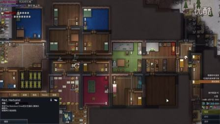
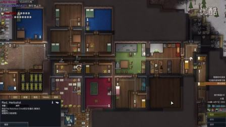

spwork




This is usually done by alpha-blending a 2D sprite to represent the lit area, similar to a smoke particle.
In your case, it appears that there are two passes, one is using subtractive blending to darken large areas, and the other is using additive blending to lighten smaller areas within the dark areas. I’ve recently brought up the possibility of testing, and possibly adding support for “dark lighting” to our 3D lighting scheme, which is as simple as making the light intensity be a signed value, so should “just work” with no real changes to the engine.

When lights are rendered the blend-mode is set according to the sign of the brightness value. If negative the light be applied as subtraction, otherwise it’ll be applied as the usual additive pass.
I was so hoping to hear that! In this case, subtractive lighting is trivial  I can start experimenting with that as soon as my player character animations are properly dealt with!
I can start experimenting with that as soon as my player character animations are properly dealt with!